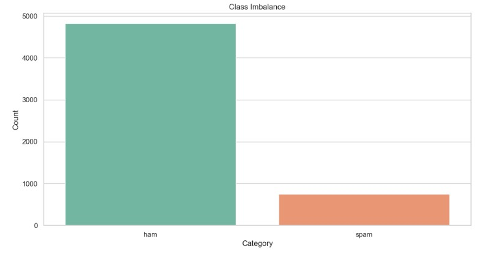
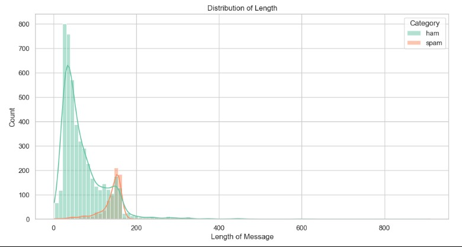

CASE STUDY: SPAM EMAIL DETECTION
I. Executive Summary & Business Context
Spam messages expose users to phishing and fraud risks while degrading trust in communication platforms. This project focuses on building an automated email and SMS filtering pipeline to accurately classify messages as either legitimate ("Ham") or "Spam". The primary business challenge is balancing recall with precision.
II. Data Overview & Exploratory Data Analysis (EDA)
- Dataset Size: 5,572 email records curated from Kaggle.
- Data Quality: Zero missing values or "None" entries.
- Class Imbalance: 86.59% Ham vs. 13.41% Spam.
- Key Insight: Legitimate messages typically fall under 100 characters, while spam messages cluster around 160 characters.


III. Methodology & Technical Approach
Data Preprocessing: Categorical labels were encoded to binary. Text was processed via CountVectorizer for frequency analysis, while RNN models utilized Tokenization and sequence padding for order-dependent classification.
Model Architecture:
1. Multinomial Naive Bayes: Word frequency baseline.
2. Bernoulli Naive Bayes: Binary presence/absence feature model.
3. Recurrent Neural Network (RNN): Deep learning model featuring Embedding, SimpleRNN, and Dropout layers.
IV. Results & Model Comparison
- Multinomial Naive Bayes: 98% Accuracy (Strong baseline).
- Bernoulli Naive Bayes: 98% Accuracy (Perfect Ham recall).
- RNN Model: 99% Accuracy / 0.991 ROC-AUC (Best overall performance).


V. Recruiter Focus: Skills & Impact
Tech Stack: Python, Pandas, Scikit-Learn, TensorFlow/Keras.
Business Value: Improved user trust through spam reduction, minimized false-positives for critical communications, and optimized operational costs via automation.
VI. Full Technical Implementation
Review the full data pipeline and model training process on GitHub:
View complete Python Notebook on GitHub